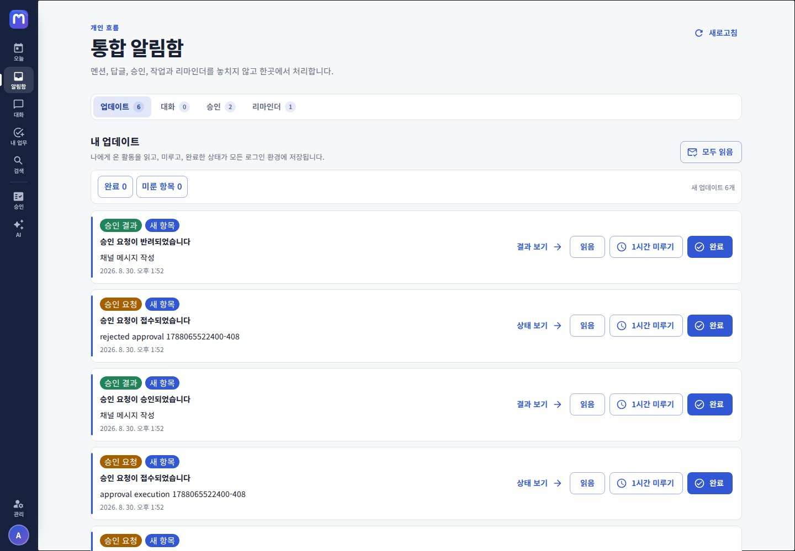
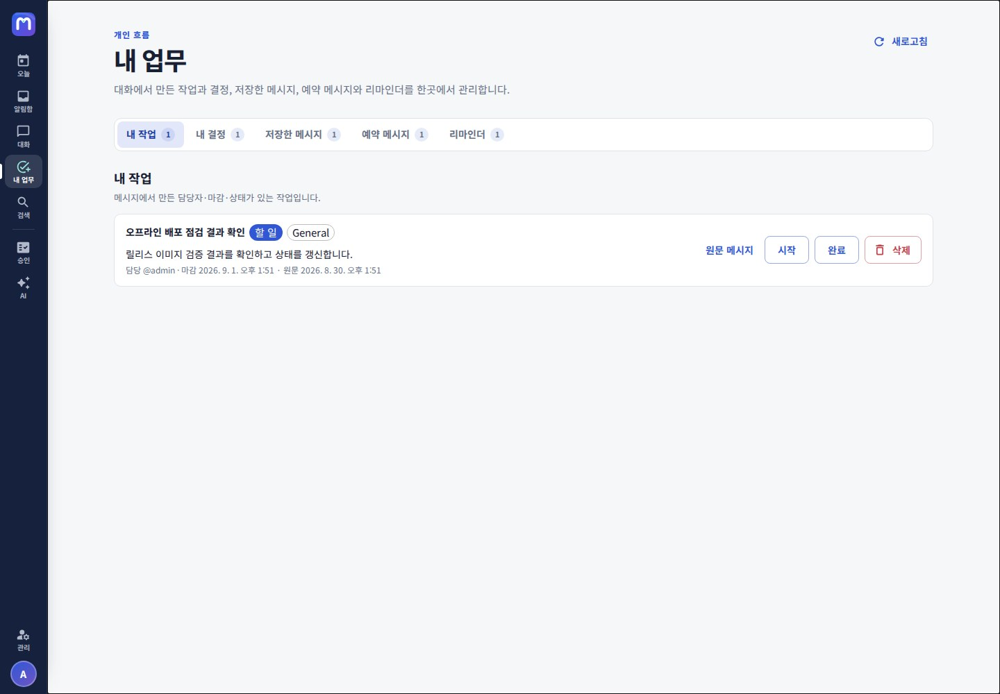
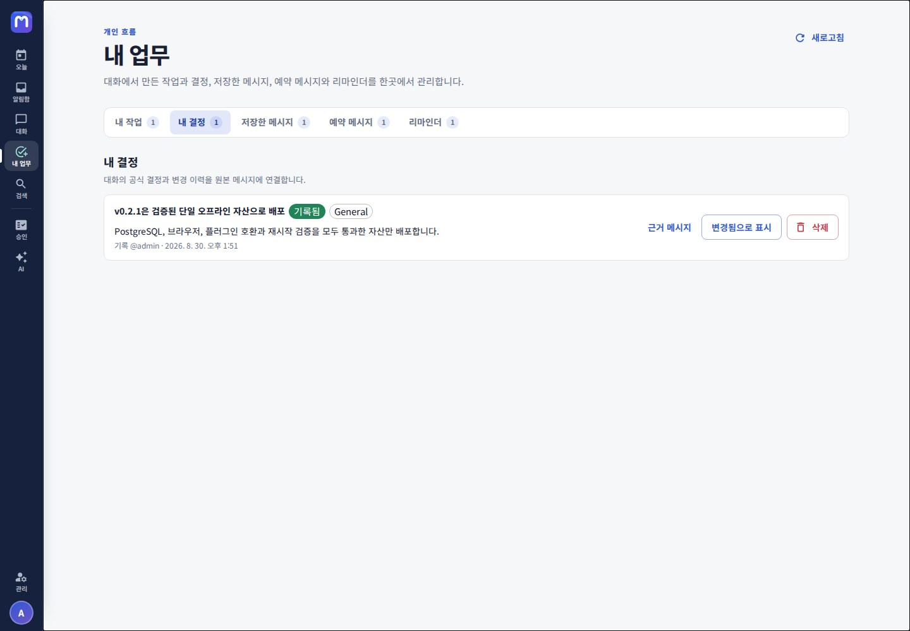
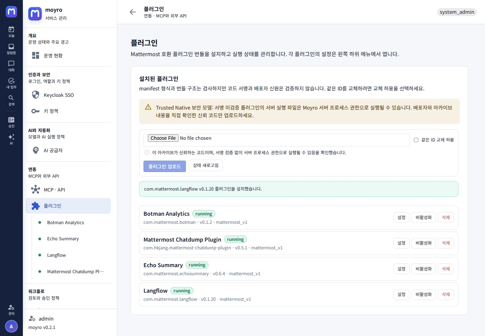
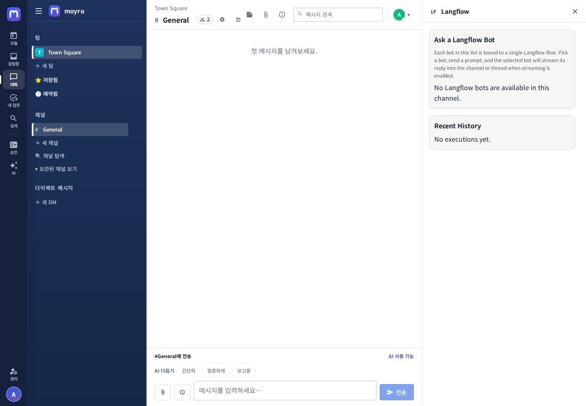
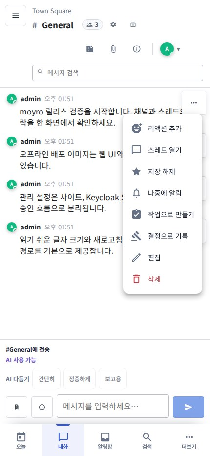

Release interface
moyro v0.2.1
제품 화면 46개
브라우저 release scenario에서 캡처한 Moyro Flow와 채널 작업 공간, 통합 컨텍스트 패널, 개인 설정, 플러그인 호환 workflow, 운영 대시보드 및 대표 모바일 흐름입니다. 네 plugin 화면은 실제 archive의 관리자 목록·전용 설정, Langflow RHS와 EchoSummary 사용자 설정이라는 명시된 호환 범위를 보여 줍니다.
로그인과 Moyro Flow
글로벌 레일에서 오늘, 통합 알림함, 대화, 검색, AI로 이동하고 실제 서버 데이터와 권한 오류를 확인하는 흐름입니다.


{kind=link}



내 업무와 승인 센터
메시지에서 만든 작업·결정, 저장·예약·리마인더의 실제 개인 데이터와 보호 작업의 요청·검토 상태를 독립 URL에서 관리합니다.
{kind=link}

{kind=link}



개인화와 내 보안
서비스 전체 설정과 분리된 사용자별 프로필, 표시, 알림, 세션, 키와 AI 선호 화면입니다.


서비스 관리자
운영 현황에서 PostgreSQL·Migration·queue·Webhook·storage의 확인 가능한 근거와 설정 경고를 확인하고 사이트, Keycloak, AI, 키·역할, MCP와 승인 정책을 관리합니다.


플러그인 호환 workflow
Release scenario가 네 실제 archive의 관리자 상태와 플러그인별 관리자 설정, Langflow RHS 및 EchoSummary 사용자 설정을 캡처했습니다. 이 네 화면은 명시된 workflow의 증거이며 범용 Mattermost 플러그인 호환을 주장하지 않습니다.
{kind=link}


{kind=link}


모바일 반응형
430×932 viewport에서 하단 탐색과 Flow 핵심 화면, 항상 접근 가능한 메시지 작업 메뉴를 포함한 10개 대표 상태의 가로 overflow 부재를 확인했습니다.


{kind=link}



이 46개 실제 캡처는 샘플 데이터로 구성한 v0.2.1 인스턴스의 29개 인증 desktop route, desktop 컨텍스트 상태, 로그인과 프로필 메뉴, 네 개의 plugin compatibility 상태와 10개 모바일 상태를 합친 것입니다. 실제 조직의 이름, 채널과 설정 값은 배포 환경에 따라 달라지며, 각 배포는 별도의 운영 acceptance 절차를 수행해야 합니다.